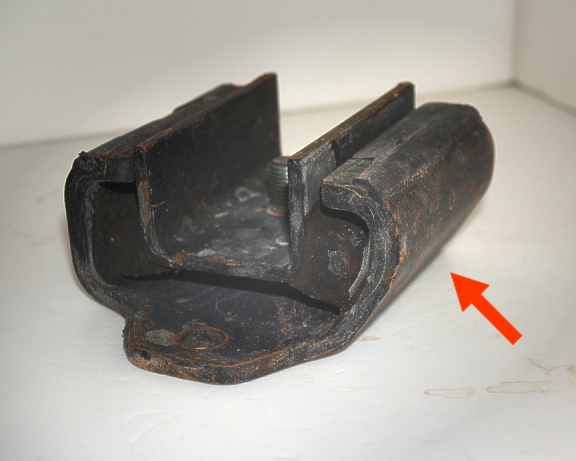

-
Odd question:
Anyone have an explanation why the mount has this beveled side to it? I checked it on both the 90A and 30A and there does not seem to be any clearance issue requiring the bevel.
I have an idea to make one out of aluminum and poly which would fit and function in a manner similar to the original. My version requires a square configuration for the bottom.
 -
Something to do with bending it in manufacturing maybe?

1988 300zxt. gt35, stance, etc. Wheels: Varrstoen ES2 18x9.5 et-13 225/40. 18x10.5 et0 245/40
1990 jetta vr6'd -
i believe it's made that way to accomodate a slope on the trans just in front of the mount for various other nissans, not the z31. its probably a nissan japan thing.
off-topic: what's the reason for designing something entirely new when the urethane block mounts work well with a simple lower bracket. you could even eliminate the dumbbells and use the factory bracket with some small rectangular braces in between the middle part.
i thought this too, but why wouldn't they just get rectangular tube and make 3 simple cuts instead of bending thick plate like that?DeleriousZ;330154 wrote: Something to do with bending it in manufacturing maybe? -
Valid question.Careless;330155 wrote:
off-topic: what's the reason for designing something entirely new when the urethane block mounts work well with a simple lower bracket …?
I was working (2005) on this idea when Jason showed me his design before production. At the time I thought his solution was a simpler and cheaper one than my idea so I never followed through. I remember there was some issues with them which I think have been addressed with later versions.
Now that I am back working on my car, I'm going to follow up and make one from my design. I don't plan to go into production but I'm sure there will be one or two that will want one once they see it. -
very cool. i am interested to see what you come up with. -
Yea we did a lot of brainstorming back then… really the best solution would be to unify that upper piece with the dumbbell piece, no sense having bushings on bushings
BUT to answer the question, it looks like it's angled so that vertical load on the mount from the transmission will compress the rubber, this would reduce it's tendency to tear… the straight side is for taking on rearward thrust
There's also the minor benefit of reducing any possible oscillation during shifts, having different motion axes

Copyright © 2006–. All rights reserved. Privacy Policy